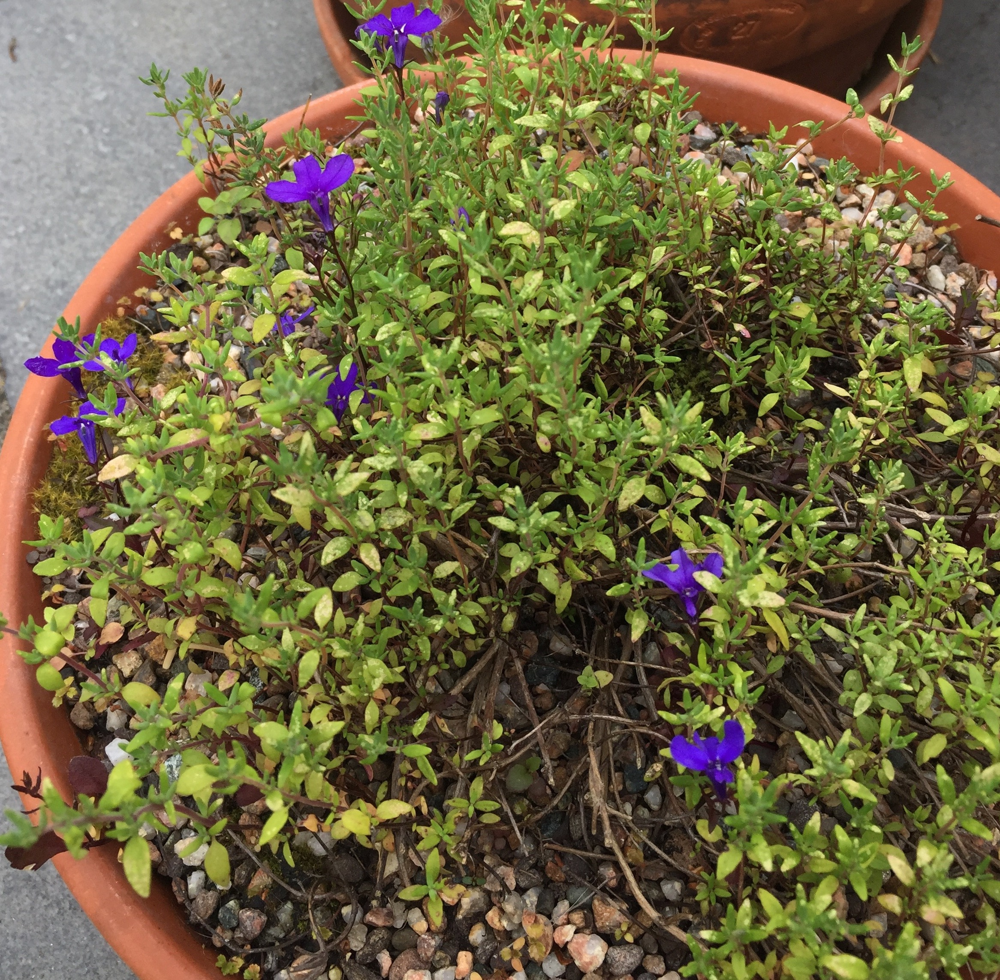

Things go wrong in the garden.
All the time, things go wrong in the garden. It matters if you are trying to win a gold medal at the Chelsea Flower show. It matters if it interferes with your ability to enjoy your garden. Otherwise, it doesn’t matter. These are plants, not children, and you can always get or grow another one.
Sometimes plants die. It may be part of their natural cycle; it may be because you did something, or didn’t do something; or it may be just because it died. Our corkscrew willow tree died. We don’t know why. I planted that tree about 14 years ago and it must have been a couple of years old already. My clematis armandii may have carked it. It’s been in the garden since we move here, so more than 10 years, and I don’t know why. The armandii growing up the dead willow, by the way, is still fine. WTF?

I’ve been telling everyone I know that I don’t seem to be able to grow foxgloves. But the weed growing in front of the green house door, which I have been standing on once a month and meaning to remove, has just flowered. Bloody Digitalis Purpurea 'Sutton's Apricot'.
My lobelia didn’t germinate. Turns out the seeds were in the pot with the thyme. I definitely did not put them there (on purpose).
My lobelia didn’t germinate. Turns out the seeds were in the pot with the thyme. I definitely did not put them there (on purpose).

This year, as an experiment, I have been wantonly chucking the rest of the flowers seeds from a packet that I didn’t use down the back of the flower bed. Maybe some of them will grow better without my help.
Here at the Dead Plants Society we aim to celebrate everything that goes wrong in our gardens, so we can learn and share our learning. Send us your pictures and tell us what you think went wrong. Like children, every garden is different and none come with a manual.